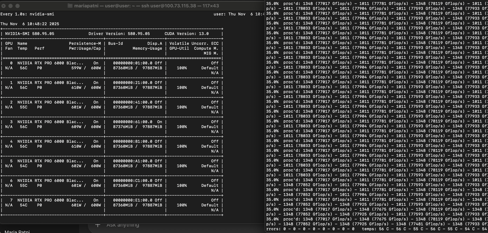
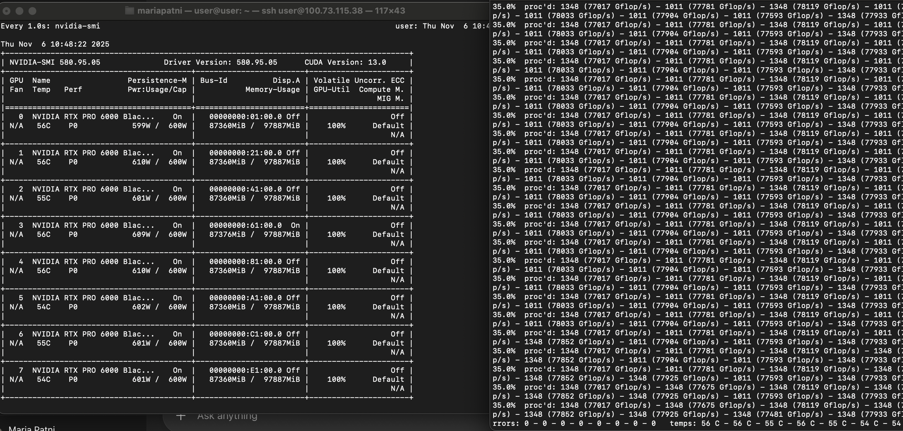
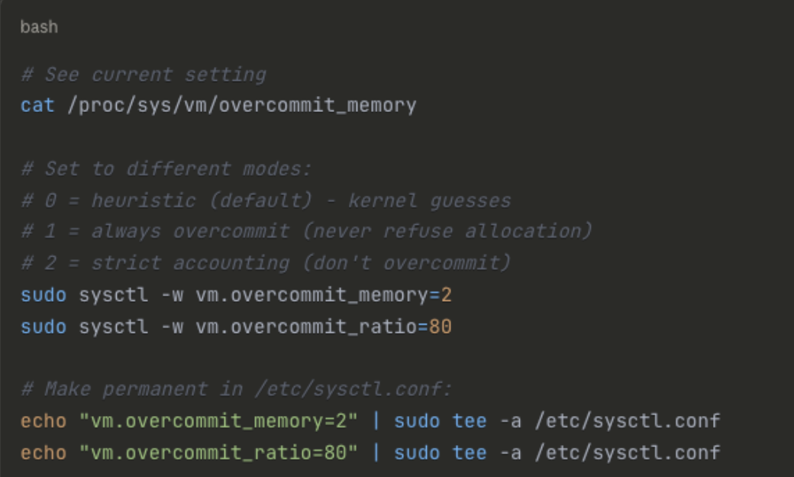
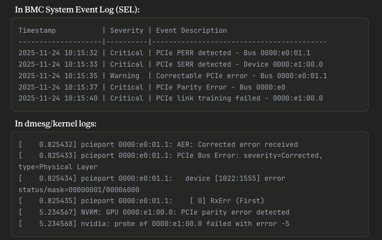

This story actually starts a few weeks ago, at a Pumpkin Carving Party. My roommate and I were invited to my brother's annual Halloween get together, where we spent 3 hours carving these:
Although we were pretty locked in on the task at hand at the kitchen island, I overheard another conversation happening at the dining table. Someone was asking if anyone knew anything about Gaming PCs, or had built one from scratch. I was intrigued.
"Why?" I interjected.
Two of the guests filled me in. Their startup had just received a Comino Grande Server, with 8 GPUs capable of running large Gaussian Splatting Models - the core tech of their company. However, the server workstation - valued at over 6 figures - came 2 months late, and came broken. Only 5 of the GPUs could run at any given time, almost doubling time taken for workloads.
2 additional months of back and forth with a poor customer service team proved unhelpful. That week, they had suggested someone disassemble and reassemble the server rack to resolve any hardware issues, which brought us to the present conversation.
I recounted my countless hours resolving Nvidia Driver issues during my time in undergrad research.
"I don't know anything about gaming computers, but I have done quite a bit of GPU debugging in the past. I'm happy to take a look!"
"See you on Monday."
The Investigation Begins
Fast forward a few days, and I was sitting on the floor of their chilly Server Room, following along a Youtube tutorial on how to disassemble the server rack. As I opened up the front cover, I kind of realized I had no idea what was going on, and it wasn't really a good idea to take anything apart or touch anything until I understood exactly what was happening. The Comino customer service team recommended doing this - but why? After reading the thread of emails, I realized they didn't have a clue either.
I asked what the exact issue was. When conducting a GPU burn test, designed to see whether or not all of your GPUs can operate simultaneously at their max capacity for a long period of time, 3 GPUs always failed to initialize. However, all were seen by the OS.

I decided to dig deeper. After running the GPU burn test multiple times and experimenting with different configurations, I made a key discovery: I could interchange any 5 GPUs and run the burn test successfully. As soon as I added a 6th, initialization began to fail. Additionally, the system could initialize each GPU individually without any CUDA errors.
This was the breakthrough I needed - it wasn't a hardware issue! The GPUs weren't faulty; this was a configuration problem. The good news? A configuration change could fix everything. The bad news? I had no idea which configuration to change.
Victory #1: The Memory Fragmentation Mystery
After three days of experimenting with different BIOS and OS settings, I finally found the first culprit.
Here's what was happening: When the system boots, the kernel implements a security feature called KASLR (Kernel Address Space Layout Randomization) that scrambles its location in memory to make it harder for hackers to attack. Each GPU needs a large, contiguous chunk of memory (32GB per GPU in our case), but the kernel's memory scrambling was fragmenting these chunks. Without enough contiguous space for all 8 GPUs, the system could only initialize 5.
Adding one word to a boot configuration file: "nokaslr"

After I changed that setting, our burn test worked!
 

I thought all was well after this.
Victory #2: The Rogue Memory Manager
However, 3 days later the server crashed again while running a memory intensive training run, with a kernel panic. The screen was completely frozen and the machine was unresponsive. I had to boot the device in recovery mode.
After looking through the logs, I learned that the system's memory manager (OOM killer) was not configured correctly. During the training run, the team had configured automatic re-runs if anything failed. The training itself was too memory intensive, which was technically a mistake on our engineer's end, not the system's.
But here's where it got interesting: when the system reached max memory, the memory manager was set to kill ANY process to free up space - not specifically the one that kept asking for too much memory. Looking at the logs, there was a 2-hour loop where the model would spin up training, ask for too much memory, the OS would desperately try to kill processes to make room, the training would fail, and the cycle would continue.
Because process killing was randomized, it eventually randomly killed one of its own kernel processes, causing a kernel panic.

The fix was simple - configure the memory manager to be smarter about which processes to kill, and set proper CUDA memory limits to prevent the issue in the first place.
Great! Now things seem to be working...
The Final Boss: The PERR Error Mystery
...but a few days later the server started crashing again.
RIP.
Every so often, either a few minutes or hours of being online, the server would randomly crash, and was only able to be accessed again after rebooting. Looking at logs from the BIOS event logger, I realized there were errors I had brushed over earlier: PERR (Parity Error) messages.
After more testing, I realized these errors always appeared right after POST (Power-On Self Test), as the OS was being loaded. This meant the problem was at the BIOS level - the firmware had some sort of miscommunication with the hardware it was interfacing with.
I spent days diving deep into forums, Reddit, Stack Overflow, and every resource I could find. Everything pointed to the same conclusion: "PERR errors = hardware failure. You need to reseat the GPUs or replace them."
But I wasn't convinced. I had already proven all the GPUs worked individually. This had to be something else.
The Breakthrough
After understanding how the motherboard, CPU, and GPUs connected together, I finally found it: power management settings.
Here's what was actually happening:
The CPU has an IOD (I/O Die) chip that handles communication with all the GPUs. There's a BIOS setting called DF C-States that enables power saving - when turned on, it allows the IOD chip to go into a low-power "sleep" mode when it's not busy.
The problem? If the IOD takes too long to "wake up" when the GPUs try to communicate, the GPU asks "is anyone there?", gets no response within the timeout period, and throws a parity error.
It's like calling someone who's asleep - if they don't pick up fast enough, you hang up and report a communication failure.
In addition, there was another setting called ASPM (Active State Power Management) that does the same thing for the PCIe connections themselves - the transmitters and receivers that send data between the GPU and CPU can also "sleep" when idle. Same problem: if one side is trying to communicate and the other is asleep, parity error.
Disabling these 2 power-saving settings resolved all parity errors. The system has been running stable for a week now.
Technical Deep Dive: For Those Debugging Similar Issues
If you're dealing with multi-GPU systems, PERR errors, or similar boot issues, here's everything I learned in detail.
System Specifications
| Server: | Comino Grande |
| Motherboard: | ASRock EPYCD8-2T |
| CPU: | AMD EPYC (64-core) |
| GPUs: | 8× NVIDIA RTX PRO 6000 (32GB VRAM each = 256GB total) |
| RAM: | 512GB DDR5-4800 |
| OS: | Ubuntu 24.03 |
| BIOS: | ASRock UEFI 2.14 |
| BMC Firmware: | 1.10.00 |
Problem #1: KASLR Memory Fragmentation
Symptoms: Only 5 of 8 GPUs initialized; any 5 worked but adding a 6th failed; all GPUs worked individually.
Root Cause: KASLR randomizes kernel memory location for security, fragmenting the 256GB of contiguous space needed for 8 GPUs (32GB each). This breaks up contiguous memory blocks, preventing all 8 GPUs from getting proper BAR mappings.
Fix: Add nokaslr to GRUB command line. See Final Settings Summary table for full details. Security trade-off: Removes one kernel security layer (acceptable for internal servers).
Problem #2: OOM Killer Misconfiguration
Symptoms: Kernel panic after ~3 days; 2-hour loop of process killing; eventually killed critical kernel process.
Root Cause: Memory overcommitment allowed system to promise 600GB+ when only 512GB available. OOM killer randomly selected victims (not the memory hog), and auto-restart created a death spiral: training requests 600GB → system says "yes" → runs out of memory → OOM kills random process → training restarts → loop repeats → eventually kills kernel → PANIC.
Fix: Set vm.overcommit_memory = 2 in /etc/sysctl.conf and add PYTORCH_CUDA_ALLOC_CONF=max_split_size_mb:512 environment variable. See Final Settings Summary table for full details.
Problem #3: PCIe PERR Errors
Symptoms: Random crashes every few minutes to hours; errors right after POST during OS boot; BIOS logs showed PERR (Parity Error) messages.
Why Not Hardware: All 8 GPUs worked individually; any 5 worked together; errors were consistent and reproducible. This pointed to timing/power management, not hardware failure.
Root Cause: PERR = Parity Error during PCIe link training. DF C-States allows IOD (I/O Die) to sleep, but wake-up takes 10-50μs while GPU timeout is 5μs → timing violation. ASPM powers down PCIe transceivers, adding more delay. With 8 GPUs training simultaneously, IOD constantly sleeping/waking created race conditions.
Fix: Disable DF C-States and ASPM in BIOS; enable PCIe Early Link Training. See Final Settings Summary table for full details and BIOS menu paths.
Troubleshooting
Check IPMI Event Log timestamps (BMC Web UI → System Event Log):
- Errors during POST: BIOS/firmware issue (hardware initialization, power management, BIOS config)
- Errors after OS boot: OS-level issue (kernel parameters, drivers, system config)
Boot: System initialization and hardware detection

POST: Power-On Self Test phase
UEFI Shell: Access BIOS settings via IPMI
Access BIOS via IPMI: sudo apt install ipmitool && ipmitool -I lanplus -H <BMC_IP> -U <user> -P <pass> sol activate → Reboot → Press DEL/F2 → Navigate with arrow keys, Enter, +/-, Esc, F10 to save.
| Issue | Quick Checks | Solution |
|---|---|---|
| GPUs Not All Initializing | cat /proc/cmdline | grep nokaslrnvidia-smi -L | wc -l |
Verify nokaslr active, run sudo update-grub and reboot |
| PERR Errors Still Occurring | Check BIOS via serial console (NOT web UI)dmesg | grep -i "perr" |
Verify DF C-States and ASPM are DISABLED via serial console |
| Kernel Panic / OOM Crashes | sysctl vm.overcommit_memorydmesg | grep -i "oom" |
Set vm.overcommit_memory = 2 and add CUDA memory limits |
| Settings Revert After Reboot | Check BIOS via serial console | ASRock web UI bug - always use IPMI serial console for BIOS changes |
| ASPM in Multiple Menus | Check all BIOS menus | Change the one in AMD CBS → NBIO → PCIe Configuration (this is the one that matters) |
| Global C-States vs DF C-States | Check both settings | Global C-States = CPU core power (safe to enable) DF C-States = I/O Die power (MUST DISABLE) |
Final Settings Summary
BIOS Settings (via Serial Console ONLY)
| Menu Path | Setting | Value | Description & Why |
|---|---|---|---|
| AMD CBS → DF Common Options | DF C-States | DISABLED | ⚡ Critical fix for Problem #3: Controls I/O Die (IOD) chip power management. When enabled, IOD can "sleep" to save power, but wake-up takes 10-50μs while GPU timeout is 5μs, causing PERR errors during PCIe link training. Disabling keeps IOD awake, preventing timing violations. Trade-off: ~5-10W higher idle power. |
| APBDIS | 1 | Disables additional power gating mechanisms. Ensures more stable PCIe operation by preventing power state transitions that could interrupt communication. | |
| DfPstate | 0 | Disables Data Fabric P-states (power/performance states). Keeps the data fabric running at full speed, preventing slowdowns that could affect PCIe communication timing. | |
| AMD CBS → NBIO → PCIe Configuration | PCIe Early Link Training | ENABLED | ⚡ Critical for multi-GPU stability: Starts PCIe initialization earlier in the boot process, providing more time for link training. Essential for systems with 8 GPUs where timing windows are tight. Gives each GPU more opportunity to successfully negotiate speed and establish connection. |
| PCIe Link Speed | Auto | Allows the system to automatically negotiate the optimal PCIe generation (Gen3/Gen4) for each device. Provides best compatibility and performance without manual configuration. | |
| ASPM | DISABLED | ⚡ Critical fix for Problem #3: Active State Power Management powers down PCIe transceivers (transmitters/receivers) when idle. Combined with IOD sleep, this creates guaranteed timing violations during boot when 8 GPUs are training simultaneously. Disabling keeps transceivers powered, eliminating ASPM-related PERR errors. Trade-off: ~2-3W per GPU (~20W total). | |
| AMD CBS → NBIO → GFX Configuration | PCIe Resizable BAR Support | ENABLED | Enables Resizable Base Address Register (ReBAR), allowing the CPU to access the entire GPU VRAM (32GB per GPU) in a single transaction instead of being limited to 256MB chunks. Provides 10-15% performance improvement in some workloads. Requires "Above 4G Decoding" to be enabled. |
| Advanced → PCI Subsystem Settings | Above 4G Decoding | ENABLED | Allows memory mapping above the 4GB address space limit. Required for Resizable BAR to function, as it enables the system to map large GPU memory regions (32GB per GPU) that exceed traditional addressing limits. |
| Resizable BAR Support | ENABLED | Must be enabled here AND in AMD CBS → NBIO → GFX Configuration. This setting in the Advanced menu enables ReBAR at the PCI subsystem level, while the AMD CBS setting enables it at the chipset level. Both are required for full functionality. | |
| Advanced → Chipset Configuration | IOMMU | ENABLED | Input-Output Memory Management Unit provides hardware-level memory isolation and translation. Required for GPU passthrough to VMs (Proxmox, QEMU/KVM) and improves security by isolating device memory access. Also enables better GPU performance in some scenarios. |
| AMD CBS → CPU Configuration | Core Performance Boost | Auto or Enabled | Allows CPU cores to dynamically boost above their base frequency when thermal and power headroom is available. Improves performance for workloads that can benefit from higher clock speeds. Auto mode lets the system decide, which is fine for most workloads. |
| Global C-States | Can be enabled | Important distinction: Global C-States control CPU core power states (different from DF C-States which control I/O Die). These are safe to enable as they only affect CPU cores sleeping, not PCIe communication. Enabling saves power without affecting GPU initialization or PCIe timing. |
OS Settings
| Configuration File | Setting | Value | Description & Why |
|---|---|---|---|
/etc/default/grubGRUB_CMDLINE_LINUX_DEFAULT |
quiet splash |
Enabled | Suppresses verbose boot messages and shows splash screen. Provides cleaner boot experience without affecting functionality. |
iommu=pt |
Enabled | Sets IOMMU to passthrough mode. Required for optimal GPU performance and enables GPU passthrough to VMs. In passthrough mode, devices are directly mapped without translation overhead. | |
pcie_aspm=off |
Enabled | Disables Active State Power Management at the kernel level. Redundant with BIOS ASPM=DISABLED but ensures ASPM stays off even if BIOS setting is missed or reverted. Prevents kernel from re-enabling ASPM during runtime. | |
nvidia.NVreg_EnableResizableBar=1 |
Enabled | Enables Resizable BAR support in the NVIDIA driver. Required for ReBAR functionality even when BIOS settings are correct. Without this, the driver won't use ReBAR even if hardware supports it. | |
nokaslr |
Enabled | ⚡ Critical fix for Problem #1: Disables Kernel Address Space Layout Randomization. KASLR randomizes kernel memory location for security, but fragments contiguous memory needed for GPU BAR mappings (32GB per GPU). With 8 GPUs needing 256GB of contiguous space, KASLR breaks this into fragments, allowing only 5 GPUs to initialize. Disabling preserves contiguous memory blocks. Security trade-off: removes one kernel security layer (acceptable for internal servers). | |
pci=realloc |
Enabled | Enables PCI BAR reallocation. Allows the kernel to reallocate Base Address Registers after initial assignment, which is necessary for Resizable BAR to work properly. Helps kernel allocate large BARs (32GB) for each GPU. | |
| /etc/sysctl.conf | vm.overcommit_memory |
2 | ⚡ Critical fix for Problem #2: Disables memory overcommitment. Default (0 or 1) allows system to promise more memory than available, leading to OOM killer randomly killing processes when memory runs out. Value of 2 means "never overcommit" - system denies excessive memory requests upfront instead of crashing later. Prevents the 2-hour death spiral where training requests 600GB, system says "yes", runs out of memory, OOM kills random processes (eventually kernel), causing panic. |
| Environment Variable (.bashrc or training scripts) |
PYTORCH_CUDA_ALLOC_CONF |
max_split_size_mb:512 |
⚡ Critical fix for Problem #2: Limits CUDA memory allocation chunk size to 512MB. Prevents PyTorch from requesting massive contiguous GPU memory blocks that exceed available system memory. Works with vm.overcommit_memory=2 to prevent OOM crashes. Without this, training scripts can request 600GB+ which triggers the OOM killer even with overcommit disabled. |
TLDR
Problem #1: KASLR Memory Fragmentation
- Root cause: Kernel randomization broke contiguous memory
- Fix:
nokaslrkernel parameter - Result: All 8 GPUs get proper 32GB BAR mappings
Problem #2: OOM Killer
- Root cause: Memory overcommitment + random victim selection
- Fix:
vm.overcommit_memory = 2+ CUDA limits - Result: System handles memory pressure gracefully
Problem #3: PERR Errors
- Root cause: IOD and PCIe transceivers sleeping during link training
- Fix: Disable DF C-States + ASPM + Enable Early Link Training
- Result: All components stay active during boot, no timing violations
The system has been running stable for 1 week now, handling full GPU workloads without any crashes or errors. Hopefully this saves someone else the weeks of troubleshooting I went through!